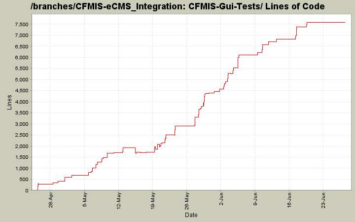

[root]/CFMIS-Gui-Tests
 Properties
(1 files, 35 lines)
Properties
(1 files, 35 lines)

| Author | Changes | Lines of Code | Lines per Change |
|---|---|---|---|
| Totals | 290 (100.0%) | 10190 (100.0%) | 35.1 |
| lhenry | 112 (38.6%) | 2936 (28.8%) | 26.2 |
| lmuppaneni | 73 (25.2%) | 2841 (27.9%) | 38.9 |
| ktimmaraju | 44 (15.2%) | 2525 (24.8%) | 57.3 |
| airlandez | 61 (21.0%) | 1888 (18.5%) | 30.9 |
changed delivery method to DBB for test data
1 lines of code changed in 1 file:
add delivery method of "DBB" for test data
3 lines of code changed in 3 files:
Bug 605 to test that Controls are disabled.
103 lines of code changed in 1 file:
Interim fix.
0 lines of code changed in 1 file:
Bug test for 604 added in DefaultAction
8 lines of code changed in 1 file:
Test for Bug 604 for uiConstruction page
97 lines of code changed in 1 file:
remove contract number fix 588
1 lines of code changed in 1 file:
Modified the code
1 lines of code changed in 1 file:
Modified the code
2 lines of code changed in 1 file:
Bug 579 fix and code cleanup.
40 lines of code changed in 1 file:
590 addition
2 lines of code changed in 1 file:
fix operating plan fiscal year
230 lines of code changed in 1 file:
Test Added for Bug 582
112 lines of code changed in 1 file:
fix for 588
166 lines of code changed in 1 file:
Updated tests for Bug 570 - switching FMS Feed Date to a label from a textbox.
10 lines of code changed in 4 files:
Was pointing to build.
1 lines of code changed in 1 file:
Fix for 543.
1 lines of code changed in 1 file:
Test for Bug 593
110 lines of code changed in 1 file:
Fix and test for bug 592.
50 lines of code changed in 3 files:
Fix for 497. Also allowing findmaxdate to handle empty contract or fmsrecord tables.
96 lines of code changed in 1 file:
(175 more)